Bob Smith is a man in search of the truth. His favorite quotes are, "We're all fools on this earth, and I can be no different"; "I know it's true, I read it at the LIE-brary"; and "The truth is not misogynistic, it's just the truth".


Being exposed to even a single, solitary, modern-day Hollywood SJW film, is like being exposed to a blue-haired feminist with a really pretty face and a killer body. It all looks good at first, but you know it’s going to mess your head up nine ways to Sunday if you stick around till the bitter end…
Thankfully, the following three Old School Hollywood films are guaranteed to reverse that trend, because these made-for-men movies supply every red-pill male with exactly what he craves: visceral, relentless, hard-core action, along with resonant, unapologetic dialogue – and all of it without a single shred of SJW sentiment or subterfuge.
Ah, so very, very refreshing… a veritable oasis amid the decadent desert of modern Hollywood despair.
So let’s drink up. Shall we.
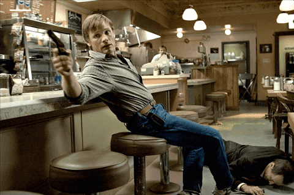
Viggo Mortensen leaves it all on the court as former Mob leg-breaker and hit man, Tom Cusack, who changes his name to Tom Stall, picks up stakes, and relocates to a sleepy Indiana town, far from his native Philadelphia, in an ineffectual attempt to forget about his past and lead a quiet, normal life.
But Cusack’s past won’t let him escape that easily, and he’s forced to confront an assortment of mobsters with bad intentions who eventually come calling – as well as his new wife’s anger and shock upon finding out that he lied to her about who he actually was to begin with…
As an alpha male in serious trouble with zero time to explain, Mortensen’s character does the right thing and bangs the hell out of his wife, Edie (played by Maria Bello) – with emphasis – in order to quickly calm her down, and she begrudgingly resumes watching his back all the way through the rest of this taut, tension-filled drama.
The fight scenes are absolutely top-notch – no bogus, chop-socky buffoonery here – and even though William Hurt’s turn as Tom’s big-brother Mob boss, Richie Cusack, features an East Coast accent that noticeably misses the mark (why so many filmmakers stubbornly insist on forcing actors to use accents they can’t master, is a total mystery to me – does it really matter in most cases, if the guy sounds like he’s from wherever it is that he’s actually from? – rant over), Hurt’s rage-filled, sociopathic character is still a tornadic force to be reckoned with, and Ed Harris’s venomous portrayal of Mob underling Carl Fogarty is wonderfully understated in sinister fashion.
You’ll get a kick out of watching Viggo’s character run wild, as he lets out his inner wild dog in the numerous, realistic fight sequences; the fight scene in big brother Richie’s palatial home is the best of the bunch, as Viggo’s character brutally dispatches a would-be assassin in a most gruesome and horrific manner…
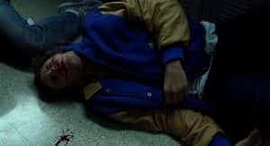
You can’t miss by watching this hard-core action film that was specifically crafted for bona fide, red-pill men. Go ahead and shoot that blonde hottie a text who lives in your building and have her come over and watch it with you. (Make sure she doesn’t forget to bring along her hot cheerleader’s outfit; like all modern sluts who horde such getups for special banging sessions with alpha males, she’ll definitely have one – and if she doesn’t admit to it, text another girl who will.)
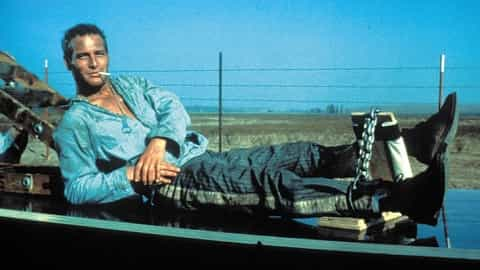
They don’t come any cooler – decorated Korean war hero Lucas Jackson (Paul Newman) gets busted for cutting the heads off parking meters in a drunken display of public defiance against the fraternal oligarchs who rule a small town in the American Deep South.
Dragline (George Kennedy), the top alpha male of the prison block, beats the brash newcomer to a pulp in a grudge-inspired boxing match, but eventually rolls over and gives Newman’s character alpha dog status, largely due to Luke’s admirable, witty, charismatic and defiantly non-conformist personality, which perpetually gets him into trouble with the backwater prison’s ruling hierarchy. (As Dragline himself puts it, during one poignant sequence in the film, while admiring Newman’s character from afar, “Hell, he’s a natural-born world-shaker…”)
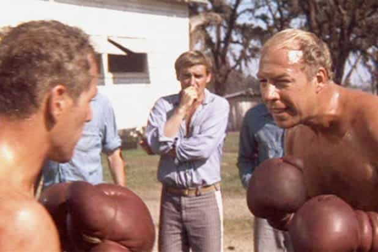
This extremely realistic, morbidly unsettling, and at times, extremely humorous film (the screenplay was adopted from a book written by ex-con Donn Pearce), takes us on a roller-coaster ride that showcases the brutal, daily grind and boredom-fueled antics of a prison road crew.
Kennedy won an Oscar for best supporting actor in this must-see, alpha-male film, and figuring out precisely why Newman didn’t win similar hardware for best actor, remains one of the greatest mysteries of all time.
(Oh wait a minute, my bad, I know why Newman didn’t win – Rod Steiger won the award that year due to landing the lead role in the SJW mindfuck film, In the Heat of the Night, which used the now-beaten-to-death theme of rampant racism among myriad, dumb, white crackers who are so unworthy of even being alive that they make life a perpetual living hell for all the poor, never-did-nuffin-wrong, terminally oppressed blacks in the bigoted, hateful, lynch-prone Deep South – yawn.)
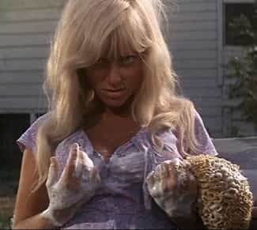
From the hard-boiled-egg challenge, to the horny-slut-washes-her-car-while-cock-teasing-the-chain-gang sequence, to the brutal beat-down scenes featuring vicious, psychopathic prison hacks and pitiful, extremely human and utterly defenseless convicts, this five-star film will make any red-pill man’s day – and probably leave him feeling invigorated and shocked by the end of it.
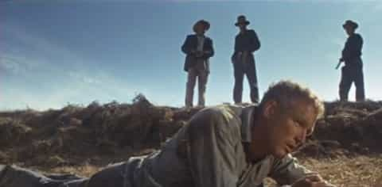
Ultra-strong acting chops are displayed by Strother Martin (who plays the prison captain with a Napolean complex; Martin’s character utters the now-infamous line, “What we have here is failure to communicate”), Harry Dean Stanton (as Tramp), Anthony Zerbe (as Dog Boy), Dennis Hopper (as the crazed convict, Babalugats) and virtually every single one of the remaining cast members, especially Morgan Woodward, who plays the sinister, silent, rifle-toting prison guard, who goes by the nickname “The Man With No Eyes”…
You could watch 50 of today’s brain-dead action films, all of which feature blow-’em-up, shoot-’em-up, beat-’em-up action sequences, a lot of SJW dialogue, and very little else, while simultaneously sporting the intellectual appeal of a can of Spam, and they wouldn’t add up to half the film that Cool Hand Luke is…
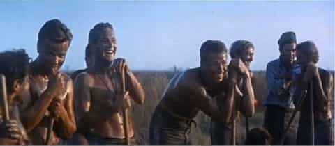
But why waste your time. Rent the film and watch it right now.
Why? Because unlike today’s vote-rigged SJW Hollywood films, which get inflated rankings at IMDB from thumbs-up Internet robots and SJW movie reviewers who pose as “regular Joes” while being paid to lie, there isn’t a real man alive who doesn’t admire this film, and I absolutely guarantee that you will love it.
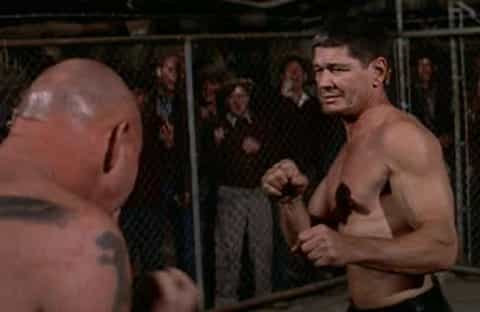
Charles Bronson just keeps coming right at you in the fast-paced, 1975 action film, Hard Times, as he portrays Cheney, a grizzled, down-on-his-luck, 50-something street-fighter, who brutally knocks out every single chump who is dumb enough to stand in front of him.
Bronson is utterly convincing as the taciturn, backwater, Depression-Era “Hands of Stone”; James Coburn should have gotten an Oscar for his turn as the colorful, loud-mouthed Speed, a handler and fight promoter who sets up shady, off-the-grid, bare-knuckle matches and peddles them to gamblers and lowbrow characters of various shapes and sizes; and Strother Martin is subtly fantastic as Poe, a philosophically inclined fight doctor with a nasal, Southern drawl, who has a serious addiction to opium.
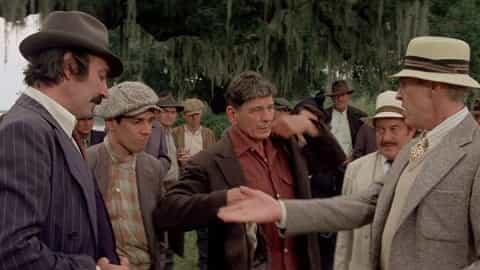
Throw in a steely-eyed performance by Michael McGuire as underworld boss Chick Gandil, and a cold, world-weary, sure-buddy-I-believe-anything-you-say turn by Jill Ireland as Cheney’s two-night banging interest, Lucy Simpson, and you’ve got a recipe for a top-notch action film that was carefully crafted for red-pill men only.
When an alpha male’s back is against the wall, his true nature is bound to come out. At which point he abandons the inconvenience of convention and starts kicking ass and taking exactly what he needs, as this hard-core RPO film clearly points out.
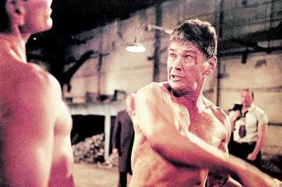
The fight sequences are satisfactorily realistic, the dialogue is first-rate, the cast is stellar and the direction is very strong (courtesy of Walter Hill, who also wrote the screenplay for this film; Hill’s other notable directorial efforts include The Getaway, The Sting, The Warriors, 48 Hours, Last Man Standing, etc.; Hill also wrote and directed the pilot for the critically acclaimed HBO series, Deadwood.)
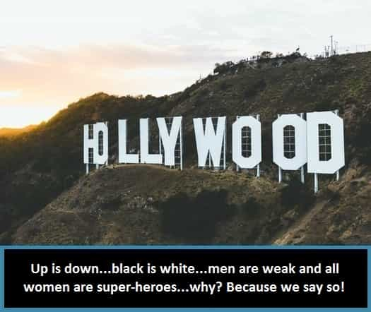
Today’s Hollywood films have been carefully crafted to turn you into a beta orbiter and a liberal, cucked, blue-pill-chugging simp – that is, once you stop fighting it, after first ripping your hair out and throwing butter-congealed popcorn at the theater screen…
Don’t let the Puppet Masters brainwash you – take a stand right here and right now, by renting a couple of these bona fide RPO films today, and reclaim your manhood.
You’ll be glad you did.
Read Next: 7 Hollywood Classics That Would Not Be Made Today